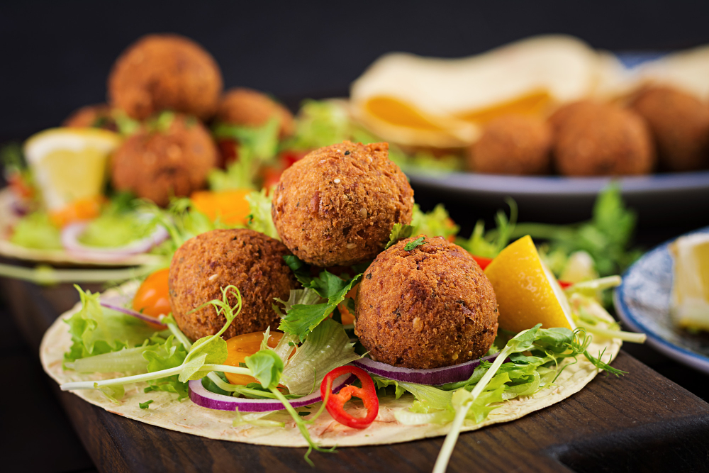

Home
Gluten Free Falafel

Description
Authentic falafels that are full of flavor and don't fall apart when frying.
Ingredients
- 1 cup Dried Chickpeas
- 1 small Yellow Onion
- 2 cloves Garlic
- 1 Green Chili Pepper (optional)
- 1/2 cup Fresh Parsley
- 1 tablespoon Ground Cumin
- 1/2 tablespoon Ground Coriander (optional)
- 1 tablespoon Salt
- 1/2 teaspoon Ground Black Pepper
- 1/2 teaspoon Gluten-free Baking Powder
- Oil for frying
Steps
- Add chickpeas, onion, garlic, chili pepper (optional), parsly, cumin, salt, pepper, and baking soda to the bowl of a food processor. Run until everything is well-combined, about 1 minute.
- Fill a saucepan with about 2-3 inches of oil, and heat it to 340-355F.
- Form falafel balls and drop them in hot oil. Do not overcrowd the pan.
- Fry for 3-5 minutes or until they're crispy and brown in color.
- Place the falafel on a plate lined with paper towels to drain. Repeat until all the falafel mix is cooked.